Meridian Room
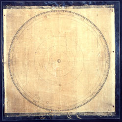
beginning XVIII cen.
autthor and place unknown
printed canvas
46 x 66 cm
These are two canvass prints illustrating the satellites of Jupiter (Jovilabium) [Inv. MdS-149] and Saturn (Saturnilabium) [Inv. MdS-150], probably produced on the instructions of Lothar Zumbach von Koesfeld (1661-1727), musician, mathematician and lecturer in astronomy at Cologne, Leyden and Cassel. This latter, as Poggendorff records (op. cit.), wrote a series of works illustrating the production and use of planetolabiums, instruments he claimed he had invented. Particular mention should be made of a Jovilabium i.e. instrumentum astronomicum ..., of 1716 and a Saturnilabium i.e. instrumentum astronomicum ..., of 1726.
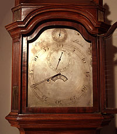
London, second half XVIII cen.
John Ellicott (1706-1772 London)
case in mahogany, compensated pendulum in steel and brass, dial in inlaid and burnished silver
winfing 60 days
207 cm, 47 cm, 27 cm
The accuracy of pendulum clocks depends essentially on being able to keep the length of the pendulum constant, notwithstanding variations in temperature. John Ellicot - one of the best English clock makers of the XVIIIth century - tried to counter these fluctuations by casting the rods of the pendulum in steel and brass, with a complicated system of levers inside the pendulum itself, for raising and lowering it when the rods expanded or contracted. Even though a detailed description was published by Ellicot himself in the Philosophical Transactions of the Royal Society (op.cit.), there were very few clocks built by this design, because of the difficulties in building and adjusting them properly. As attested by a note dated 15 April 1787 in Reg. Sp. Acc. Scienze Bo., vol.XI (Arch. Dept. Astron. Bo.), this clock was installed on that date in the Meridian Room, where it replaced the regulator clock by George Graham, purchased in 1757 and today unfound. The same note informs us that the clock had been bought from the Assunteria of the Institute for 750 Bolognese lire, but neither the date of sale nor of manufacture are recorded. Ellicot was already dead by that time which means the clock had been bought used or else from Ellicot’s atelier, if it still existed.
In Ceschi’s 1843 Inventory we read the following description: "Regulator Clock built by the Englishman Ellicot which marks hours, minutes and seconds, with pendulum made of two rods of different metals, and with lens carrying the correction mechanism. This pendulum is kept in its elegantly decorated mahogany tower, and furnished with locks and keys. Key for winding up the pendulum which is done once a month." The dial face, in inlaid and burnished silver, has separate dials for minutes and seconds; a small half-moon shaped window shows the hours in Roman numbers, while yet another dial at the top indicates whether the clock needs winding. Restored by G. Morigi (Bologna) in 1979, it has been rehoused in the Meridian Room. A similar exemplar to the Bologna clock was purchased in 1765 by Harvard College - where it can be found today - for £35 14 sh.
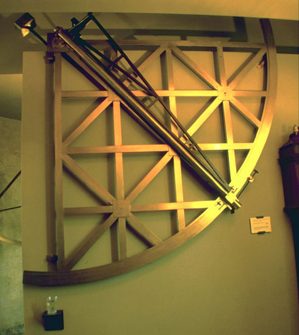
London, 1739
Jonathan Sisson (1690?-1747)
brass
radius 172 cm
Jonathan Sisson was the best pupil of Graham, the maker of the instruments ordered by Halley for the Greenwich observatory. His instruments were famous for their detailed perfection, all the more incredible if we bear in mind that in those days there were no machine-tools and all the work was completely manual. This quadrant is the oldest, made entirely from a single metal which protected it from the distorsions that variations in temperature caused instruments made of brass and iron. An accurate description of the instrument and its accessories is to be found in the 1843 Inventory by Gaetano Ceschi:
"Mural quadrant by the Englishman Jonathan Sisson with 3 and ½-foot radius, all in brass, fitted with telescope with object lens by Bruni of 1 and ½-inch aperture, and eyepiece with a string micrometer. To the Telescope is attached a Nonius, which slides with it along the graduated limb of the quadrant, and which serves to give the fourth part of an arcminute, or 15 seconds.
Two metal supports fixed to the wall by screws carry the whole machine. (not found)
Four small metal clamps attached to fittings built in the wall serve to keep the machine straight along the meridian. (not found)
Brass frame which is placed over the eyepiece and which is used to carry a colored glass plate with metal frame. (not found)
A small reflector with brass shank which goes on the object lens. (not found)
A brass ball with small hook which is attached to the end of a metal wire and which serves as perpendiculum for rectification. (not found)
A small walnut shelf hung on wall, used to carry a glass with water in which is dipped the ball of the perpendiculum. (not found)
N. 3 brass handles for adjusting the support screws of this machine. (not found)
The Telescope is counterbalanced by a hard sandstone counterweight placed at the end of a lever arm, which via an iron axis remains attached to the mahogany frame, that is connected to the telescope. (not found)
Two metal supports fastened to the top of the wall by screws, between which revolves the axis of the lever arm which supports the counterbalance. (not found)
In the opposite wall 2 other metal supports are fastened with screws, together with the 4 clamp supports for carrying the quadrant when it is to be used towards the North. (not found)"
Replaced in 1979 on the east side of the reconstructed meridian wall, the instrument bears on its limb the words Jonathan Sisson London. The 1746 inventory states that the counterweight was made of lead and not "sandstone". The long wooden square parallel to the telescope is original; the attachment to the telescope, lead counterweight and its mounting have been restored (G. Morigi, Bologna, 1979) as have the other parts fixed to the wall. The micrometric screw and clamp attachment to the limb of the quadrant have also been restored (1979). The date when the original object lens was replaced by that of Bruni is not known. On the object lens of the transit telescope by the same London craftsman, ordered at the same time, we find the date 1739. A handwritten note by Eustachio Zanotti in the Reg. Sp. Ist. Scienze, vol. VII, dated 16 August 1742 (Arch. Dip. Astron. Bo.) reveals that the instrument became part of the Specola’s equipment on that date. Finally, in 1873, it was removed from service. The precision and detail - both technical and artistic - of this instrument and of other works by Sisson, such as the transit telescope and the movable quadrant [files 14 and 19] were such as to earn them a place, as models of astronomical equipment, in the tables of the Encyclopédie by Diderot and d’Alembert.
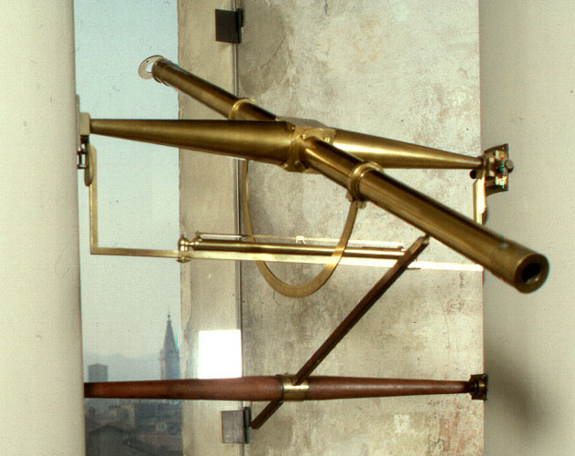
London, 1739
Jonathan Sisson (1690?-1747)
brass and wood
length of telescope 85 cm
In the Inventory of the Astronomical Orders ... since the year 1746 we read:
"Canochiale of two Allasse lenses used to observe the Meridian passages, from the lower part of the Canochiale is attached a brass semicircle divided into degrees, and from the upper part a brass cylinder with a ball that serves as a counterweight, another ball attached to the tube near the eyepiece, which also serves as a counterweight;
A level must be added to this Canochiale, which serves as a horizontal meter from the Rectus Axis to the Canochial;
Other Axis, or wooden spindle used to stop the Canochiale at different inclinations.
Both the axis right to the Canochiale, and the wooden spindle, have their respective brass supports, two for the first which form forks, and two for the second, which consist of two transversal plates, all work of England.
This instrument is supported by a Macigno pedestal decorated with marble, all with a lot of elegance. "
Its builder, Jonathan Sisson, was the best pupil of Graham, the builder of the instruments ordered by Halley for the Greenwich Observatory. His tools stand out for the perfection of execution, which is incredible if you think that machine tools did not exist at the time and the processing was completely manual. As with the large mural quadrant and the movable quadrant made by the same architect [cards 14 and 17], the movable part of this instrument is identical, down to the smallest details, to the instrument of the passages described in the Encyclopédie by Diderot and d ' Alembert. Noteworthy is the large reversible level, still filled with its fluid. Only a few years ago, in fact, the glass tube boring technique had made it possible to obtain from the spirit levels the sensitivity required for setting up astronomical instruments.
It was put back into the station in 1979 among the reconstructed columns which, according to Zanotti, were "of the Doric order in that proportion that satisfied the need, and together with the elegance" (Zanotti's hand note in Reg. Sp. Ist. Sciences Bo., Vol. VII, dated 16 August 1742, Arch. Dip. Astron. Bo.). The walled supports on the columns and the wooden rod that connects the ocular part of the instrument to the lower spindle, ensuring its position in height, were also restored in the same year. The threads of the micrometer found broken and the reflector were also replaced which, although not mentioned in the inventory description above, seems to be original. On the tube it reads: Jonathan Sisson London. On the lens we read JaS, Mann Fecit 1739. It is probably James Mann Jr. (c.1717-1749); heir to an atelier that had a long activity in London (under the banner Archimedes and two pairs of golden Spectacles), in which achromatic objectives were also built. Some lenses of the Mann family of makers are found in Oxford and Cambridge (Daumas, op. Cit.). In the volume of the Registers of the Specola di Bologna (Arch. Dip. Astron. Bo.) Marked "1815", on May 30, there is the annotation relating to its replacement with a new passage instrument, made by Reichenbach, Utzschneider und Liebherr [next].
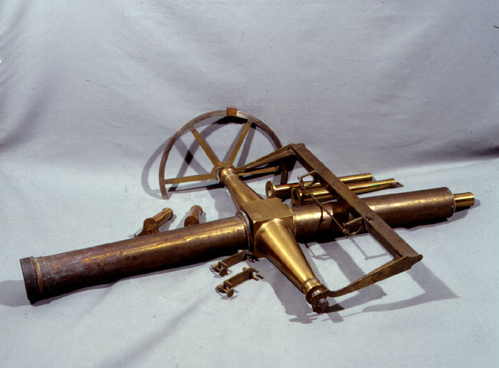
Munich, c. 1814
Georg Friedrich von Reichenbach (Durlach 1772- Munich 1826)
Joseph von Utzschneider (Rieden 1761 – Munich 1840)
Joseph Liebherr (Immenstadt 1767 – Munich 1840)
brass
length of telescope 97 cm
diameter of object lens 8 cm
In 1815 the instrument of the Sisson passages [previous] was replaced with this more modern one, made according to the emerging German technology and signed Reichenbach, Utzschneider und Liebherr in Münich. The Doric columns, which supported Sisson's instrument, were replaced on that occasion with new columns built according to the Ionic order, as shown in a drawing of the time (Reg. Sp. Bo., Vol. Marked 1815 on 30 May , Arch. Dip. Astron. Bo.). An accurate description can be found in the Ceschi inventory of 1843:
"Reichenbach and Utzschneider passages instrument of 3 feet with achromatic objective of 3 inches of aperture, occular, and frame of a wire micrometer. The right arm of the instrument is joined by an alidade bearing a vernier, which serves to divide the parts of the semicircle, and which comes to give the fifteenth part of the last divisions of the semicircle, that is, one minute.
A bearing for the Levante arm, in which level correction is practicable, and from which light can be transmitted into the telescope by means of a special scissor. (not found)
A bracket level susceptible of appropriate corrections to reduce the bubble in the middle of the tube.
Two vertical arms that belonged to this level, which were replaced by the two that are currently in work. (not found)
Lid on the lens opening, which was replaced by a lighter one, so that the camera remained in balance at any elevation. (not found)
N. 3 colored glasses with suitable recesses. (not found)
Two handlebars, with which to practice azimuth and vertical corrections in the 2 bearings that carry the telescope axis. (not found)
Two lever arms with counterweights and arms that largely support the weight of the machine, so that it rests in the least on the bearings.
Two brass lanterns with luccignolo lights, one of which serves to transmit light inside the telescope, to illuminate the micrometer, the other to illuminate the Grahams Pendulum exhibition. (not found)
A second occular with higher magnification.
Both the indicated bearings, that the 2 levers above are recommended with screws to other pieces of metal duly spliced in the 2 columns, which support the entire device described. (not found)
A small press to be joined to the graduated semicircle, in order to prepare the place for the telescope for an immediately consecutive passage. "
The objective could not be recognized with certainty, due to the probable lack of parts of its mount, the same applies to the eyepieces due to the lack of the relative torch and the micrometer frame. Some elements of the lever arms with counterweights that supported the weight of the instrument probably remain. From a note by Rajna dated 1913, about the reconstruction of the meridian room (Arch. Dip. Astron. Bo., Envelope XXVIIII), it is deduced that the instrument was put out of use. At the time, the columns that supported it were also demolished. One of the bases of the original columns still exists, walled up to the parapet of the balcony which is accessed from the Meridian Room; on the south-east wall of the room there is a closet with doors, suitable for containing the main accessories of the machine, such as, for example, the level.
Georg von Reichenbach, mechanic and optician from Munich, was one of the major builders of the nineteenth century, above all for the precision and care of his instruments, which derived from his engineering studies in England and from the experiences he had as an engineer officer of the Bavarian army, in the smelting of guns. He teamed up with a watchmaker Joseph Liebherr and Joseph von Utzschneider, a Bavarian businessman and for some years mayor of Munich, to found in 1802 the Mathematisch-Mechanisches Institut von Reichenbach, Utzschneider und Liebherr in Münich. In 1806 the young Joseph von Fraunhofer (1787-1826) began to collaborate with this workshop - who would have left important contributions to the study of optics - thus increasing and improving the optical quality of the instruments. A few years later Reichenbach, Utzschneider and Fraunhofer founded another institute, dedicated exclusively to optics, but in 1814 Reichenbach broke away from the partners, building his own factory with Traugott Lebrecht Ertel. Finally, in 1820, he abandoned the construction of scientific instruments to become director of the Bavarian Central Office for Roads and Bridges, realizing, also in this field, uncommon works, such as the largest pump in the world, which allowed water to overcome a difference in height of 350 meters and which remained in operation until 1958.
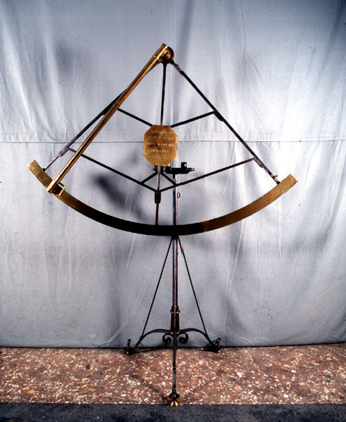
Bologna, 1710
Sante Menini (Bologna XVII – XVIII sec.)
brass and iron
1 telescope
radius 100 cm
It is a mobile quadrant with two and a half Bolognese feet (c. 100 cm) in radius, with iron foot and armor and brass flap, equipped with two telescopes, one fixed and the other mobile. We know, from the inventory of 1727 and from the revision of 1780 to the guide to the Institute of Sciences of Bologna, that in 1725 it was donated to the Academy of Sciences by Cardinal Antonio Davia, who for a few years had a small observatory in his palace. : “Ex munere Emi. Card. De Via / Quadrans Astronomicus semid. 2 ½, iron structure, center ac limbus auricalceo, telescopiis duobus, suppedaneo, et axibus tribus ferreis. ". It was built in 1710 by the Bolognese watchmaker Sante Menini, as stated in the central brass shield - Sante Menini watchmaker / in Bologna 1710 - under the motto Suum volvens / audax industry / mundum.
We know from the correspondence of the Genoese Marquis Paride Maria Salvago to Manfredi, on 19 March, 6 April and 14 March 1712 (Arch. Dip. Astron. Bo. Busta XXXVII), that the instrument was very successful and that other quadrants were ordered from Menini . At one point, however, he refused to satisfy the many requests due to the harmfulness of the engraving of stairs of this size, which took place in the etching. Perhaps a late decision, because the craftsman had to die shortly thereafter. It lacks one of the telescopes and the lenses of the second which appeared to be the mobile one. The attachment to the flap is for restoration (G. Morigi, Bologna 1979). Of all the quadrants of the Specola, it is the only one that retains the joint that allowed it to be used as an astronomical sextant.
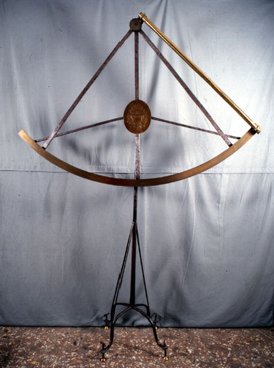
Roma, 1702
Domenico Lusverg (1669 – 1744)
brass and iron
1 fixed
radius 117 cm
Already noted by Manfredi in Instrumenta quibus observationes peraguntur in hoc observatorio (scilicet Marsili Observatory), this quadrant is accurately described in the 1712 Instrumentum donationis:
"Quadrans Astronomicus pendulo instructus, semidiametro pedum trium, Lusvergo Artifice. Structura quadrantis ferrea; sed limbo, & centro auricalcea lamina inducta est, limbusque Tychonice divisus. Pendulum intra tubum e’ bractea auricalcea factum simul cum ipso pendulo volubilem custoditur, ne’ venti agitatione turbetur. Pro pinnulis adsunt Dioptrae Telescopicae duae, altera ad Instrumenti latus apposita, eaque immobilis, quae per cochleas quadratis loculamentis duobus adstringitur; altera volubilis circa cilindrum, qui quadrantis centro immittitur. Ferreum Instrumenti suppedaneum pedibus quatuor solo insistit, singularisque adiecta est cochlea, cujus motu quadrans tantisper inclinetur. Ipse tum verticaliter, tum horizontaliter convertitur circa axes duos, quorum alter intra arundinem ferream volvitur, quae e’ suppedaneo assurgit, alter e’ quadrantis postico exit, priori axi ad perpendiculum occurrens, cochleisque duabus ad hujus superiorem partem adstringitur. Adest & tertius axis amovibilis, cujus ope Instrumentum in omnem inclinatam positionem componitur, atque ita non modo ad altitudines, sed & ad syderum distantias captandas usum habet. Umbilicum ejus tenet lamina auricalcea, cui Marsiliae gentis insigna insculpta sunt. Telescopia filis in regione foci decussatis praedita sunt, deficentibus lentibus, oculari scilicet, & objectiva."
Missing are the movable telescope, at least as of 1746, the lenses of the fixed telescope, as already reported in 1712, the pendulum which in 1849 still existed and the swivel junction or third axis which made it useable as an astronomical sextant, already missing in 1843. The scale engraved on the brass limb shows the arcminute. The vertical support arm is made with a gun-barrel and the Marsili coat-of-arms is engraved on a central brass escutcheon crowned with the words Aloysius Ferdinandus Comes Marsigli. The first of a series made at the work-shops of the Lusvergs [files 12 and 16], this instrument was built under the supervision of the Parisian astronomer Maraldi - at Rome for many months in 1702 - using the Paris model of instruments.
From a letter of Maraldi to Manfredi dated 25 July 1702 (Univ. Bo. Library, Mss. Marsiliani 80B) we learn in fact that Francesco Bianchini and Maraldi itself were overseeing the actual making of the instrument in Rome, urging the craftsman to take all the necessary precautions so that the result would be like that of the quadrants made in Paris which Picard had used for the triangulation of France. This instrument, however, fell short of expectations on account of its somewhat irregular gradation (Reg. Oss. Marsiliano, Vol. 1 dated 23 May and 17 November 1703, Arch. Dept. Astron. Bo.). One of the causes of this quadrant’s imperfection - besides the fact that the technique for building it and engraving the tychonic scale was rougher than for the other two instruments - is that it was the first instrument of this size made by the young Domenico. His uncle Giacomo Lusverg, craftsman of proven skill, had died and the buyers had thus had to entrust construction of the quadrant to the less expert nephew (for information on the Lusverg family of craftsmen see Tabarroni and P. Todesco,op. cit.). A subsequent letter of Manfredi to Marsili on 26 December 1702 (Univ. Bo. Library, Mss. Marsiliani 80B) signaled the arrival of the instrument in Bologna. Restoration was carried out by Giovanni Morigi (Bologna) in 1979.
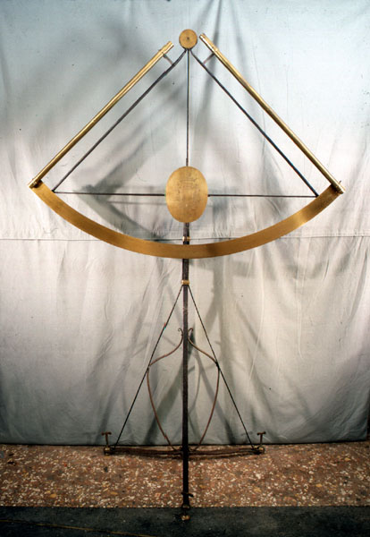
Roma, 1703
Domenico Lusverg (1669 – 1744)
brass and iron
2 fixed telescopes
radius 117 cm
Despite the failure of the first instrument [file 11], Manfredi’s confidence in Domenico Lusverg was in no way shaken and this second instrument was commissioned from him. Left this time to his own devices, the craftsman came up with a real masterpiece, whose scale was engraved with such precision and sharpness as to be second to none and replaced, in practice, the first quadrant. In line with Manfredi’s request, the limb is slightly longer than 90°, so as to be able to use the verification method for the instrument employed by the French astronomers, consisting of "turning it upside down". The features engraved on the limb were accurate to one hundredth of a millimetre and with this instrument Manfredi began using the method of corresponding elevations to compute the transit time of the stars across the meridian, achieving an accuracy that made errors greater than two arcseconds rare; the quadrant could therefore be used to check the operative regularity of clocks and the accuracy of the mural semicircle (see Part I, par. 11). It was described in the 1712 Instrumentum donationis as follows:
“Quadrans alter eadem forma, atque opificio eodem, à Lusvergo etiam fabrefactus, omnia priori similis, eodemque instructo, sed ferrea eius contignatio perpendiculariter quadrantis plano insistit. Limbus etiam est illi paulo latior, & exquisitiori divisione incisus."
It was modified in 1728 (Reg. Specola Ist. Scienze, Vol.II, dated 23 March 1728, Arch. Dept. Astron. Bo.), when Manfredi added a second telescope perpendicular to the original and reduced the number of supports from 4 to 3, to make it less cumbersome and enable observations to be made through the opening that ran across the roof of the Meridian Room. Like the previous quadrant [file 11], this instrument is not signed and the central brass escutcheon bears the same engraving: the Marsili coat-of-arms crowned with the words Aloysius Ferdinandus Comes Marsigli. From at least 1746 the movable telescope went missing, and from 1843, when the pendulum still existed, the swivel junction or third axis, that allowed the instrument to be used as an astronomical sextant, went the same way. The objective lens of one of the fixed telescopes is an original. The instrument was restored by Giovanni Morigi (Bologna) in 1979.
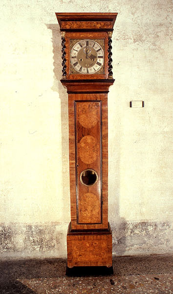
London, 1701
Daniel Quare (1649 – 1724)
dial plate in silver and inlaid brass, inlaid wooden case
winding 30 days
204 cm, 47 cm, 24 cm
Of the older clocks used in the Specola, this one by Daniel Quare and its twin - presently held in the University Library - are the only ones to survive. To safeguard the case, often made of valuable wood, it was not uncommon for a second case of rougher design to be built to house the mechanism so as to avoid wear and tear to the original. Indeed, referring to a French clock by Isaac Thuret, purchased from Cassini, Manfredi told Marsili that immediately after its delivery he had placed it in an ordinary wooden tower (see Part I, par. 12, note 100). It was in this way that the clocks most valued by the astronomers disappeared without trace while these two, judged unsatisfactory from the start, survived. The quaker Daniel Quare had been watch-maker to William II and had specialized in the production of transportable thermometers and barometers. For the construction of these latter he had obtained a patent in 1695 and worked it with the then famous watch-maker Thomas Tompion.
Manfredi’s hand-written note on Instrumenta quibus observationes peraguntur in hoc observatorio (scilicet Marsili Observatory) records a "Horologium Londiniense Quarei dictum A" and a "Horologium Londiniense aliud Quarei dictum B". A letter from Manfredi to Marsili, dated 10 January 1702 (Univ.Bo. Library, Mss.Marsiliani 80A), had in fact mentioned the arrival of two English clocks which had been entrusted to "watch-maker Santino" (probably Sante Menini [file 13]) to be cleaned. A letter written shortly after, however, on 7 February 1702 (Univ.Bo.Library, Mss. Marsiliani 80A) declared that, however accurate they might be, the clocks were not suitable for astronomical observations, since they were not regular enough in their operation. An entry in the Records of the Marsili Observatory confirms that they were never used for observations. In fact, already in the 1712 Instrumentum Donationis, the clocks in question are no longer listed among the instruments of the Specola. One was tracked down to the Institute of Physics at the University and, after being restored in 1979 by G. Morigi (Bologna), can now be seen in the Meridian Room of the Specola. The other is in the University Library. The hours on the dial are in Roman numbers, the minutes in Arabic; within the hour dial a smaller dial tells the seconds and a square window displays the days of the month.
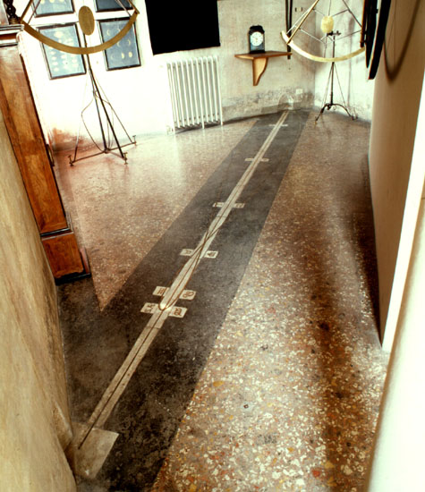
Bologna, 1741-1742
Ercole Lelli (Bologna 1702 – 1766)
brass e marble, length 635 cm
The first exemplar of a string meridian that we have a full description of was made in 1713 in the Observatory of the Tower of Luxembourg in Paris by Joseph-Nicolas Delisle (1688-1768) (op.cit.). However, in the 1703 inventory of the instruments in the Marsili Observatory, we find written, in Manfredi’s hand, Meridianae filares quattuor pro nunc, an entry which suggests that this type of use of the most common meridian line was already widespread before Delisle’s written work. It was a true astronomical instrument, unlike the apparent and mean solar time meridian, whose purpose was often purely ornamental. Even if they provided greater accuracy in computing the transit times of celestial objects across the meridian, the mural instruments were, in fact, not always able to guarantee the planarity of the graduated limb. It was therefore preferable, at least in the case of the Sun, to calculate the moment of its transit across the meridian with a different instrument whose main part consisted of a simple string stretched between two fixtures, which, by its very nature, could not deviate from a straight line. Once the string was perfectly oriented along the meridian, the transit time of the Sun was no longer affected by the different elevations on the horizon it has in the various seasons of the year. The moment of transit could likewise be computed with an accuracy of about half a second of time, accurate enough if compared to the operative regularity of the clocks of the period. The differences between the transit times of the Sun measured with the meridian line and those measured with the telescopes of mural instruments made it possible therefore to calibrate the non planarity of their limbs and correct the transit times computed for the other stars. Things went on like this until the introduction of transit instruments, but the string meridian remained for the whole of the XVIIIth century the standard instrument for the determination of noon, both for its simplicity and its stability. It was therefore indispensable for Manfredi to set up a room, inside the Specola, that would consent observation of the meridian transit of celestial objects and allow the building of a string meridian that was accurate enough.
"Likewise a shutter with its fitting for maneuvering it was made and fitted with the aim of covering and uncovering the hole that lets in the Sun on the meridian in the said Room of the Semicircle and two notches were made in the two iron fixtures placed at the two ends of the said meridian through which the string marking the arrival and exit of the sunlight is stretched in the plane of the meridian." (Manfredi in Reg. Sp. Ist. Scienze Bo., Vol I, dated December 1726).
There are many notes preserved in the Archives of the Department of Astronomy regarding both its use and restructuring, which occured in 1741 with a view to the imminent arrival of the English instruments by Sisson [files 14, 17, 19, and 35]. The Commentari of the Academy of Science (T.II, part I, 1745, p.40) tell us that the builder of the new meridian line - still visible as indeed is the Tuscan order decoration with columns, traces of which can still be found on the walls of the room - was the Bolognese Ercole Lelli, history and portrait painter, scenographer, architect, mechanic, sculptor and anatomist. On that occasion the wall which supported Lusverg’s great mural semicircle was modified and support columns for Sisson’s transit telescope erected [file 19]. The old wooden floor was replaced by today’s. Of the original 1726 structure, the perimetrical walls remain along with the two strong support arches built on the structures of the first floor of the building and inclined according to the diagonals of the room.
The two meridians are described in Ceschi’s 1843 inventory as follows:
"Apparent solar time meridian built in the floor of the apposite Room (Meridian) with brass foil edged round by 2 strips of marble, with Zodiac signs around in brass, encased in marble squares. Mean time meridian of brass foil built round the afore-mentioned. A brass lamp fastened to the wall of the room, in which in silver plate the hole is made that serves as gnomon for the said meridians. At the ends of the first meridian along the lateral walls on the floor there are two specially designed brass pieces which serve as support for the string, that is stretched above the same, in order to determine the arrival and exit of the solar image, and estimate the mean time. These supports for the string can be corrected as appropriate.
A small board with stretched paper which is placed under the string where the solar image is projected."
The lamp was designed to allow the fall of a plumb line from the opening through which the sunlight enters and strikes the string of the meridian. The string could be adjusted to just touch the plumb-line. The position of the string on the support was governed by the V-shape and two small weights attached to the ends, "two brass balls", served "to stretch the string". The north wall still carries the three "brass nails for use of the said string", i.e. which were used to pick up the string of the meridian. In 1815 the transit telescope of Sisson was replaced by a more modern one by Reichenbach, Utzschneider und Liebherr [file 20] and the original support columns were replaced by others, placed closer together and of Ionic order. In 1912 the mural quadrant of Sisson and the transit telescope were taken out of service, the support wall of the quadrant demolished and the columns knocked down. The roof, which originally opened along an east-west axis, was replaced by a normal covering. Finally, in 1952, with the construction of the aula magna of the Institute of Astronomy, whose outer wall fits into that of the Meridian Room, this latter was reorganized again and the roof raised. The room was used as a deposit for books. The restoration work carried out in 1979 by the architects Mauro Monesi and Luigi Suffritti could not be complete. The opening of the cover was not restored but its original existence was underlined by leaving a large 89 cm hole which according to the documents was the size of the original opening. The meridian wall was rebuilt slightly longer than the 1741 version - which was about 293 cm vs x 31 cm thick - to carry the restored Lusverg semicircle [file 16]. In 1990, in order to verify whether there were still traces of the old wooden floor - used by Manfredi to set up some of the instruments and which we know was six feet, one and a half inches (about 264 cm) from the rotational centre of the semicircle’s telescope - a cut was made in the floor, under the window door that opens onto the terrace to the south-west, but no sign of any preexisting floors was found.
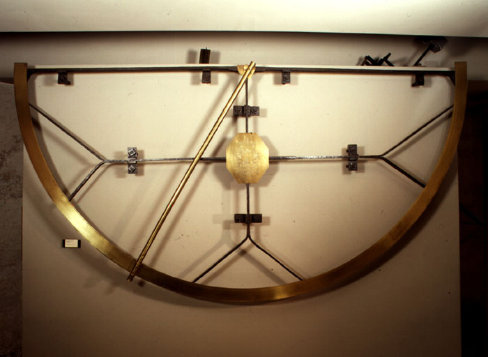
Roma, 1704
Domenico Lusverg (1669 – a.1744)
iron and brass
radius 151 cm
The use of mural instruments fitted with telescope sights dates back to 1683 when a first instrument of this type was installed in the Paris Observatory. In 1704, when our instrument was built and put to use in the Marsili Observatory, it was therefore a still fairly recent observational procedure. It had been made possible by the enormous progress made in that period by clocks which had become so accurate as to compete with the direct and precise measurements obtained with the so-called astronomical sextants that computed the distance between two stars according to the difference between their transit times across the meridian. Lusverg’s instrument, though smaller than instruments being used at that time in the observatories of London and Paris, was no less accurate. The latitude of Bologna, computed with its help in 1706, was only 8 tenths of an arcsecond off the real value, a typical error for the instruments made in the workshop of the Lusvergs which made them some of the best for the first half of the XVIIIth century.
It was with this instrument that Manfredi in 1731 was able to confirm for the first time Bradley’s theory of the aberration of light and provide evidence, unexpectedly found, of the reality of the Earth’s orbit around the Sun, predicted by the Copernican system (see Part I, par. 14). It was set up in the Marsili Observatory on 1 August 1705 and removed May 28, 1709 (Reg. Oss. Marsiliano, Vol. I and III, Arch. Dip. Astron. Bo.). The detailed description found in the Instrumentum donationis of 1712 suggests a provisional arrangement until the tower of the Specola of the Istituto delle Scienze was built with the Meridian Room where the semicircle was installed in December 1726 and rectified in March 1727 (Reg. Sp. Ist. Scienze, Vol. I, Arch. Dip. Astron. Bo.). We do in fact read:
"Semicirculus ad Meridianas observationes semid. ped. IV a Lusvergo elaboratus ferrea contignatione, limbo, & centro auricalceo. Dioptra est illi Telescopica, suis lentibus instructa circa cylindrum centro insertum volubis, in limbo divisiones indicans, quae Tychonica methodo peractae sunt. Marsiliana insignia ad umbilicum Semicirculi auricalco incisa spectantur. Ipsum Instrumentum oblique suspensum est in conclavi Astronomico, eadem verticali, & immobili positione, qua in Meridiani plano collocandum est. Sustinent illud vectes ferrei X diversae longitudinis pareti implantati. Eorum capita cochleatim contorta desinunt in semicirculi planum, quod inter alia duo helicum ferrearum, iis capitibus intortarum plana constringitur."
A further rectification was made in 1735, bringing it nearer the meridian wall to improve stability and fitting a new object lens and eyepiece made by Francesco Vandelli, professor of military architecture at the Institute (note dated 6 October 1735 in Reg. Sp. Ist. Scienze, Vol. V, Arch. Dip. Astron. Bo.). It was withdrawn from service in 1741 (Reg. Sp. Ist. Scienze Bo., Vol. VII, p. 2 dated 1741, Arch. Dip. Astron. Bo.) when the Meridian Room was reorganized for the installation of the instruments by Sisson. In 1849 the telescope still had lenses, today missing. Its present-day attachments to the centre and limb along with the support screws built into the reconstructed meridian wall have been restored by Giovanni Morigi (Bologna 1979). The instrument, whose central brass escutcheon bears the same engraving as the two movable quadrants [file 11 and 12] - the Marsili coat-of-arms crowned by the words Aloysius Ferdinandus Comes Marsigli - is not signed (for information on the Lusverg family of craftsmen see Tabarroni and P. Todesco, op. cit.).
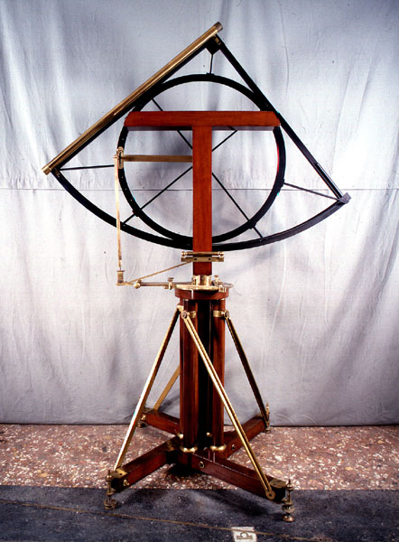
Londra, 1739
Jonathan Sisson (1690?-1747)
Ferro, legno mogano e ottone
1 cannocchiale
Raggio 107 cm
London, 1739
Jonathan Sisson (1690? -1747)
Iron, mahogany wood and brass
1 telescope
Radius 107 cm
The handling of this instrument - the purpose of which was essentially to determine at what instant a star had passed through the meridian in order to be able to define the direction of the south and regulate sundials and wall instruments - was entirely entrusted to mechanical organs, contrary to what happened with the instruments of the end of the seventeenth century and the beginning of the following century. Thus, much less manual skill was required of the astronomer for setting up the instruments and for carrying out observations. Also in this field, therefore, the technique had developed in the direction of incorporating into the machine functions that previously belonged to man. A trend, this characteristic of the XVIII century, which prepares the passage from the artisanal organization of production to the industrial one.
"Mobile quadrant of Jonathan Sisson English with a radius of 2.9 feet, with fixed telescope, and perpendicular all in metal, and supported by a very sturdy mahogany wood frame with appropriate brass harnesses. - we read in the inventory of 1746 (Arch. Stato Bo., Assunteria d'Istituto fund, Div. 11.) - The flap of the quadrant bears an exact division, which being arranged in a Tychonic scale can give the value of 1/3 of a minute or the 20 seconds for the direction of the plumb line. By the action of 4 screws at the base of the luminaire, and by an air bubble level joined to the vertical axis that supports the Quadrant, it is possible to obtain the perfect verticality of said axis, from which then to A suitable device can make the edge of the dial perfectly in contact with the plumb line. Four metal plates are placed under the screws of the base. A brass lever is used to turn the aforementioned screws. "
The pendulum is missing; the connecting rod between the base and the dial - which transmits the fine variations of inclination - has been restored (G. Morigi, Bologna, 1979) while the relative screw is original. It bears the inscription J. Sisson / London on the flap, undated; on the objective of the instrument of the passages of the same author and ordered at the same time the date of 1739 is engraved, which allows the dating of this instrument. The accuracy of realization - both technical and artistic - of this instrument and of the others manufactured by Sisson and present in the Specola, such as the instrument of the passages and the mural quadrant [cards 17 and 19], meant that they were reported, as a model of astronomical instrumentation, in the tables of the Encyclopédie by Diderot and d'Alembert.
Visit the next room now:Sala dei Globi
Or consult the index on the left to choose the next room among those available.